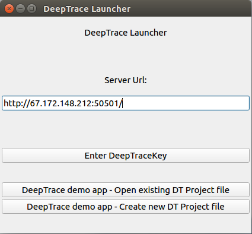
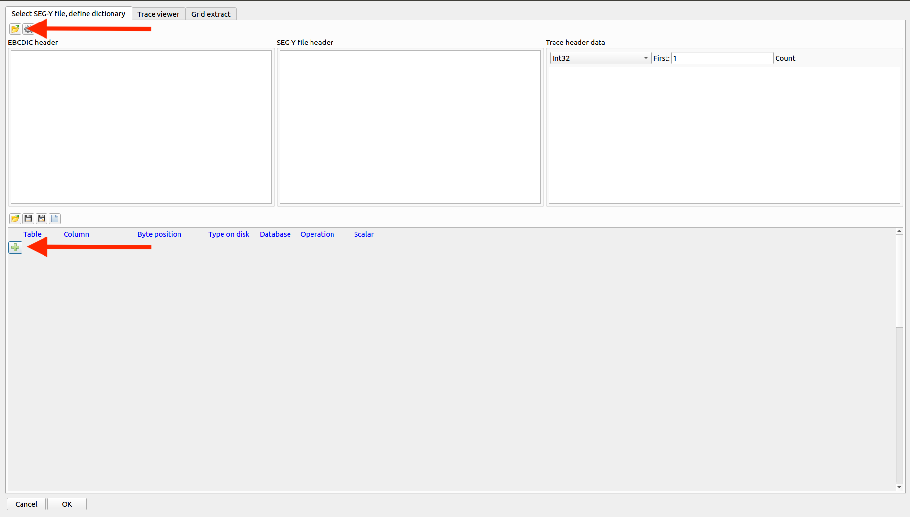
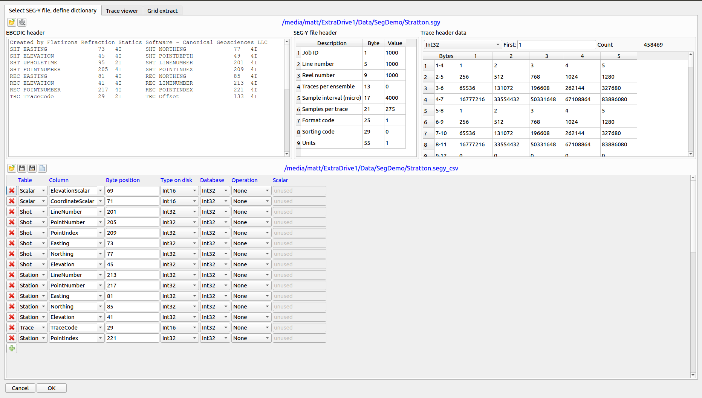
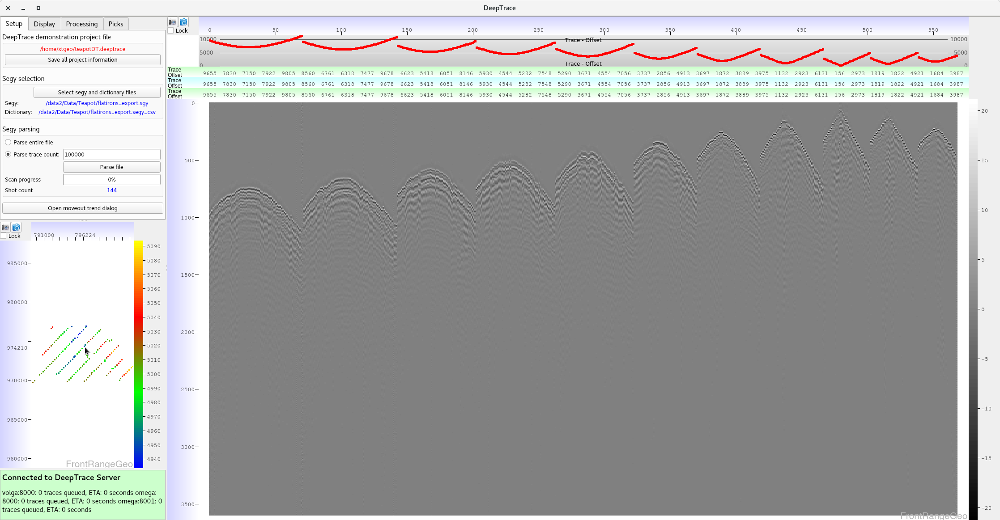
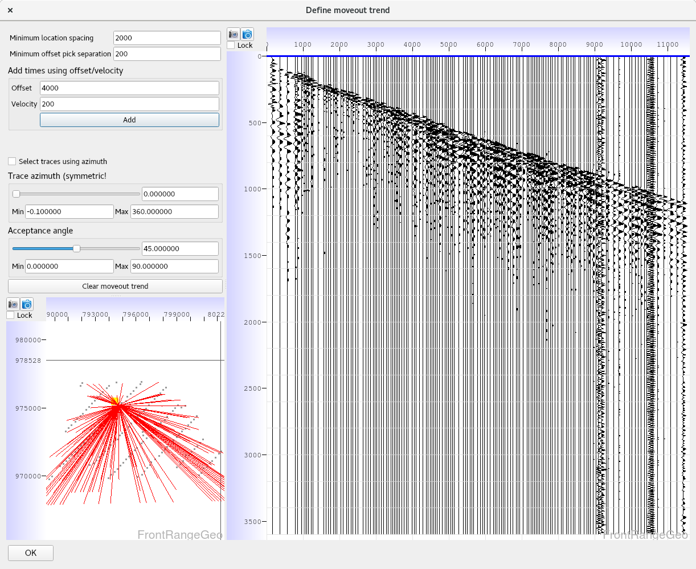
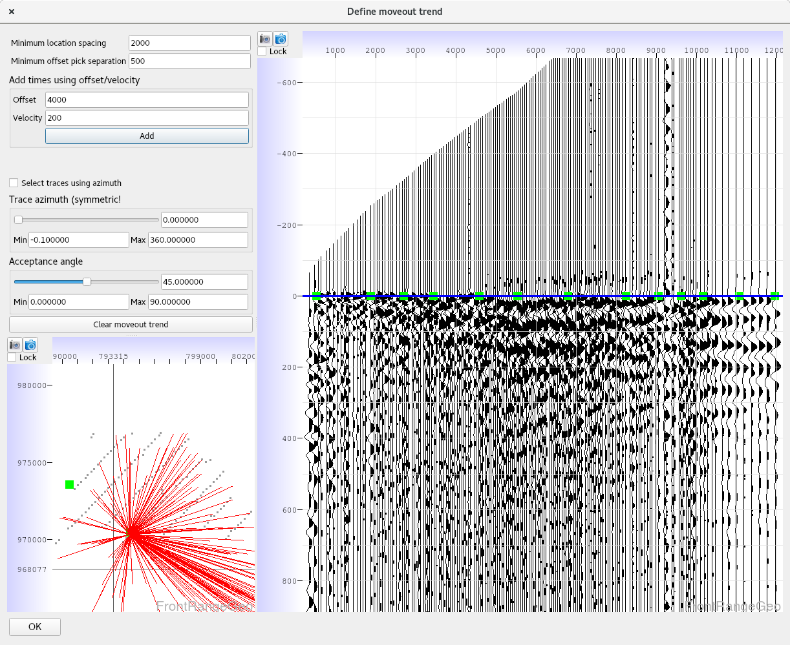
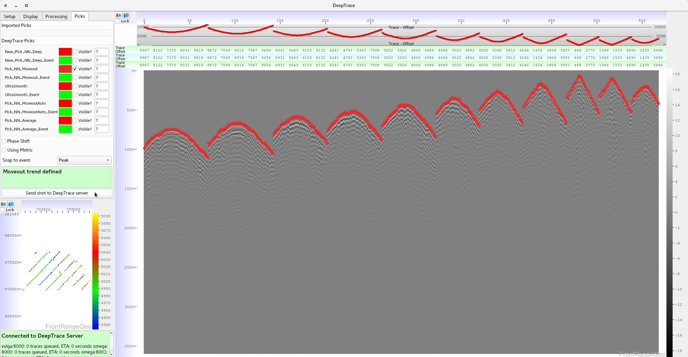

DeepTrace Installation and Usage
Before installation, you must request a free demo license key. Please email us to request a key.
We currently only support installation on Red Hat-based linux distros, particularly CentOS. You can find the packaged program here: DeepTrace.rpm (3MB) (last updated Sep 3)
Instructions:
To install the program, from the command line run:
> sudo yum localinstall DeepTrace.rpm
The DeepTrace application is now available from the command line as a binary, simply run
> DeepTrace
The DeepTrace main menu is now available, from which you can create a new project, or load an existing one.

When creating a new project, there are three main steps before a shot can be picked:
1) Parsing a SEG-Y
Reading and parsing a SEG-Y file can be a frustrating task, since many files do not conform to the standard set out in the SEG specification. As such, the DeepTrace program must be given the correct byte locations of important header information to construct and correctly display the seismic data. When a new project is created, a SEG-Y loading window will automatically open, from which you can select a SEG-Y file and define a SEG-Y csv:

The file button on the top left opens a .sgy file
The + button on the middle left defines a new row in the .segy-csv
Fill in the relevant byte location information by adding rows to the segy-csv.
When you are finished defining the rows, you must save the file and give it a location by clicking the blank file button on the right.
A sample csv is shown below.

This example shows what a filled in .segy_csv looks like. You must modify the relevant byte locations and byte lengths to match your data. Malformed data, and incorrect or incomplete header dictionaries will result in undefined behavior in DeepTrace.
Now that the SEG-Y file has been chosen and the header dictionary created, the SEG-Y file can be parsed. After clicking "OK" the first 100,000 traces in the file will be automatically parsed. You can choose to parse any number of traces, or the entire file. Parsing the file locally collects and stores all the trace header metadata, such as coordinate and channel information. This parsed information is stored in your local .deeptrace project file, and is what is used to load in a previously created DeepTrace project.

2) Defining a Moveout Trend
After parsing the SEG-Y file, the moveout trend dialog will automatically open. In the moveout trend window, click anywhere on the basemap to create a shot gather sorted by offset. Click directly on the traces where you think the arrival times are at various offsets, and repeat this process for multiple geographic points on the basemap. The green boxes in the basemap show where a moveout trend has been created. The better you make the moveout trend, the better DeepTrace can pick your data. Take some time to make it dense and accurate.
Click directly on arrival times at various offsets to flatten the data. This should transform it from looking something like this...
To something like this.
This moveout trend is used in the "Pick_NN_Moveout" model.
3) Picking
Finally, navigate to the "Picks" tab in the top right to send shots to the DeepTrace server and view picks. Models which are checked have their picks displayed on the seismic. The color of picks from different models can be modified by clicking on the colored boxes next to the respective model names. Model names followed by "_event" take the eponymous model's picks and snap them to the nearest event chosen beneath the model window. There are two additional options available when picking, "Using Metric" and "Phase Shift". "Using Metric" tells DeepTrace that the offset values are in meters rather than feet, and "Phase Shift" transforms the data so that peaks and troughs are switched.
Click on the "Send shot to DeepTrace server" button to get picks. Wait until all models have returned their picks before navigating to another area of the survey.